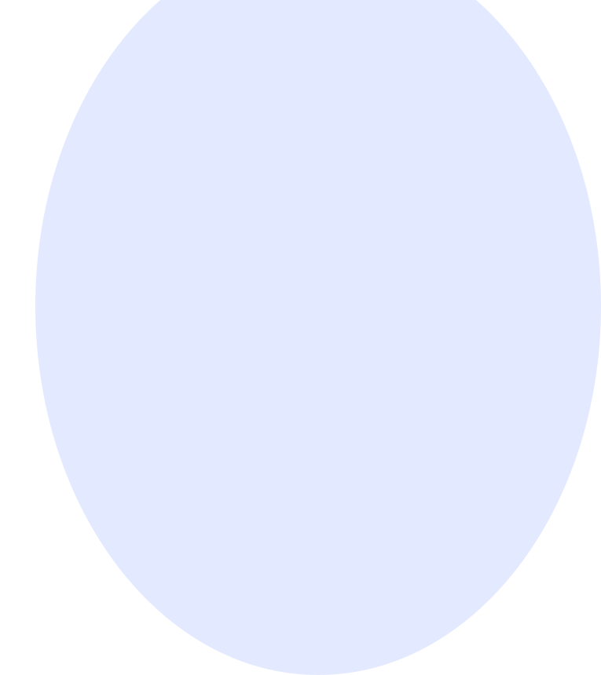

RINGTONE
SIGNAL SNAKE
104 BPMSCENE 01 / 07
МЕЛОДИЯ
ЦИКЛ 1 / 2■ READY TO CONNECT
12 abc3 def4 ghi5 jkl6 mno7 pqrs8 tuv9 wxyz*0 +#
Одна нота в столбце. Повторный клик удаляет её.
Звук выключен. CONNECT запускает мелодию.
NO ANSWER
ИСТОРИЯ / 7 СИГНАЛОВ
УПРАВЛЕНИЕ
SCENE 01
SIGNAL SEARCH
NEXT: CONNECT
−2
ЧИСТО